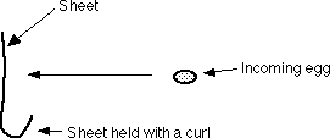

Materials: ordinary dinner plate, a ping pong ball and an egg.
Instructions: Place the egg in one hand and the plate in the other hand. Throw the egg in the air and catch it on the plate. Move the plate down ahead of the egg and moving slightly slower until the egg is on the plate, then slow the plate to a stop. This demonstration requires some practice. Use the ping pong ball and practice catching it on the plate without it bouncing. When you can do this you are ready to try it with the egg.
FOSS Connection: Balance & Motion - Activity 1: Balance
Science Specialists Connection: Mass, Pendulums
There are reliable and wild accounts of pilots and sport parachutes that have survived a free fall to earth without the aid of a parachute. One hit the bows of an evergreen tree mowing them off as he went and lived to tell the tale. A women sport parachutist in California landed feet first in a lake some fifteen feet deep, driving herself into the mud at the bottom up to her waist and suffered no injury. Lucky for her she entered the water a few yards from two men fishing who pulled her to safety. Wouldn�t it have been awful to have survived the fall and end up drowning stuck in the mud? That would be frustration!!! Today we know that spreading the sudden stop out over a larger period of time is the key to preventing serious injury. A small increase in the stopping time can have a dramatic effect in preventing injury.
The advent of air bags in automobiles is the single most important improvement to injury prevention for people in accidents after the seat belt. Both of these devises increase the time your body gets to stop during a collision. There are many examples of this effect from bumpers on cars to the use of our own legs as we jump down a given distance. If you were to drop stiff legged with locked knees and spine held ridged the falling distance that will cause serious injury moves from close to ten feet to just about an inch.
When young people start to play a game like baseball they don�t understand the concepts of giving with the catch. At first the ball seems to hurt your hand until you develop the timing and rhythm during the catching of a hard thrown ball. Yet, in the pros, it�s not uncommon for the first or third base coach to catch a hard hit foul ball barehanded.
Materials: Some eggs, a glass container for breaking the eggs, a sheet, and three people.
Instructions: Have two people hold the sheet from the sides with a good curl at the bottom. Throw the eggs as hard as you like hitting the sheet anywhere after which they should roll to the bottom of the sheet and be caught in the curl. If you can throw the eggs very hard be sure you push on the egg length wise or they can break in your hand. It�s good to break the eggs for your audience so that they know they�re not hardboiled or plastic.

FOSS Connection: Balance & Motion - Activity 1: Balance
Science Specialist Connection: Primary & Senior Balancing